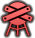
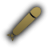
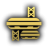

Localizações
Existem 8 tipos de Localizações nos oceanos de Europa.
 Formação natural
Formação natural
As Formações Naturais são locais desabitados relativamente aptos para colonização. Como não há Postos Avançados nesses locais, as tripulações dos submarinos são aconselhadas a reabastecer os suprimentos e se curar nos Postos Avançados antes de entrar nas Formações Naturais.
Local Final
O Local Final é o ponto final da jornada de uma tripulação de submarino até o centro do Olho da Europa. Chegar a este local irá "encerrar" a campanha, teletransportando o submarino e sua tripulação junto com tudo o que eles reuniram de volta ao seu posto avançado inicial, permitindo-lhes começar de novo, mas com dificuldades de nível definidas ao máximo para seus biomas, junto com o mapa sendo redefinido e ocultado novamente.
Postos Avançados
Os postos avançados são onde os cidadãos de Europa construíram as suas cidades e vilas. A maioria das pessoas reside nesses postos avançados, sendo o restante parte de tripulações de submarinos. Os postos avançados têm uma variedade de usos, desde militares até pesquisa e mineração.
Postos Avançados Abandonados
Postos Avançados Abandonados são o resultado de outros postos avançados que sucumbiram à Radiação Joviana ou aos Campos de Caça próximos. Postos Avançados Abandonados são diferentes de outros postos avançados porque são habitados exclusivamente por bandidos ou monstros que devem ser exterminados para restaurar o posto avançado.
Posto Avançado de Habitação
Postos Avançados de Habitação são o primeiro tipo de posto avançado estabelecido para fornecer uma base para o desenvolvimento em um posto avançado diferente quando certos requisitos forem atendidos.
Postos avançados Militares
Os Postos Avançados Militares são um dos três tipos de postos avançados especializados espalhados pela Europa, ocupados principalmente pelas forças de segurança da Coalizão. Esses postos avançados possuem celas de prisão e arsenais seguros que são acessíveis apenas à Segurança do Posto Avançado.
Posto de Pesquisa
Os Postos Avançados de Pesquisa são um dos três tipos de postos avançados especializados espalhados pela Europa, ocupados principalmente por pesquisadores que estudam a fauna circundante. O Posto Avançado de Pesquisa contém laboratórios de última geração repletos de eletrônicos, terminais e células de isolamento para cobaias.
 Posto de Mineração
Posto de Mineração
Os Postos Avançados de Mineração são um dos três tipos de postos avançados especializados espalhados pela Europa, ocupados principalmente por mineiros. Seu interior pode ser diferenciado de outros Postos Avançados por sua seção única de poço de mina.
Colônias
As colônias são o maior tipo de posto avançado. As colônias não se transformarão em outros tipos de postos avançados. Isso significa que todos os locais no mapa, com exceção do Local Final, eventualmente se tornarão uma Colônia se não houver Campos de Caça ou se a Radiação Joviana estiver desativada.
Passagens
As passagens são as redes de cavernas entre locais acessíveis e onde ocorre a maior parte da vida dos submarinistas. Algumas passagens possuem estruturas, como Ruinas Alieníginas, Destroços e Estações Beacon. Outros também têm monstros à espreita sob a caverna principal, prontos para derrubar qualquer infeliz submarino que vagueie pelo Abismo.
Areas de Caça
Os Campos de Caça são passagens com um monstro do Abismo particularmente problemático. Os Campos de Caça podem impedir que certos locais se transformem e fazer com que os Postos Avançados sejam abandonados. A Coalizão recompensará qualquer um que se aventurar no Abismo e matar o monstro. Um bônus de reputação e uma recompensa em dinheiro serão dados à tripulação do submarino que matar o monstro e tornar a área segura para habitar. Entrar em uma passagem com um Campo de Caça adicionará automaticamente a missão Campo de Caça como objetivo secundário.
Estações Beacon
As Estações Beacon têm função oposta aos Campos de Caça; aumentando em 20% a chance de um Local Vazio ser colonizado e se tornar um Posto Avançado. No entanto, eles estão inicialmente inativos e devem ser ativados para que sejam eficazes. A Coalizão também dará recompensa em dinheiro e bônus de reputação para quem conseguir reativar a Estação Beacon. Entrar em um nível contendo uma Estação Beacon adicionará automaticamente a missão Ativar Beacon como objetivo secundário.
Passagens Fechadas
Existem duas passagens para um novo bioma: uma controlada pela Coalizão e outra pelos Separatistas.
Na entrada de um novo Bioma, a facção controladora desbloqueia a passagem para aqueles com boa
reputação, ou para aqueles que estão dispostos a fazer uma “doação” pesada.
As tripulações dos submarinos devem falar com o oficial do posto avançado para obter acesso, porém
não permitirão a passagem a menos que a reputação da tripulação seja satisfatória ou o suborno seja
pago.
Abaixo está uma tabela com a reputação exigida e os valores de suborno necessários para entrar em
cada bioma.
| Bioma | Reputação | Suborno |
|---|---|---|
| Europan Ridge | 30 | 2.000 Mk |
| The Aphotic Plateau | 40 | 4.000 Mk |
| The Great Sea | 50 | 8.000 Mk |
| Hydrothermal Wastes | 75 | 16.000 Mk |
Avisos de profundidade
Dependendo da profundidade de esmagamento do submarino e da profundidade inicial do local, um destes ícones pode ser exibido. Um ícone amarelo sinaliza que a profundidade no início da passagem pode ser controlada por um submarino, embora a passagem possa exigir que o submarino vá abaixo da profundidade de esmagamento. Um ícone vermelho sinaliza que a profundidade no início da passagem já está fora do alcance do submarino e seu casco cederá rapidamente à pressão.